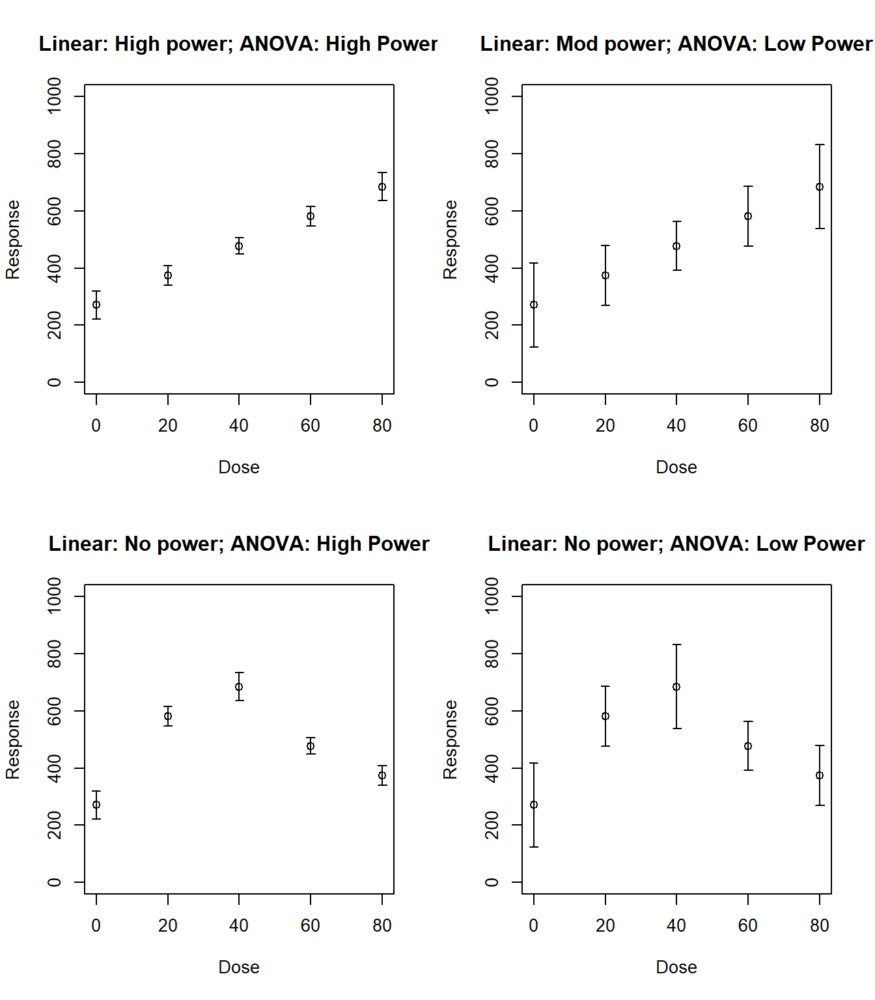
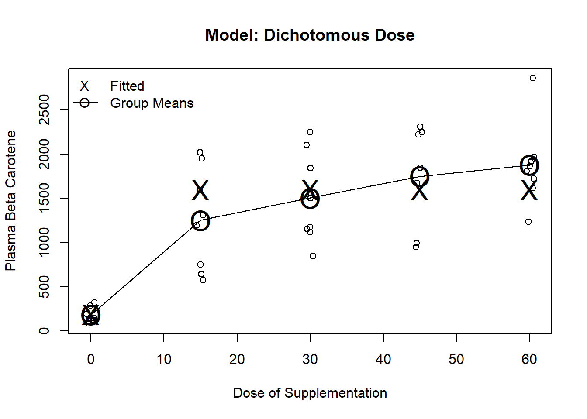
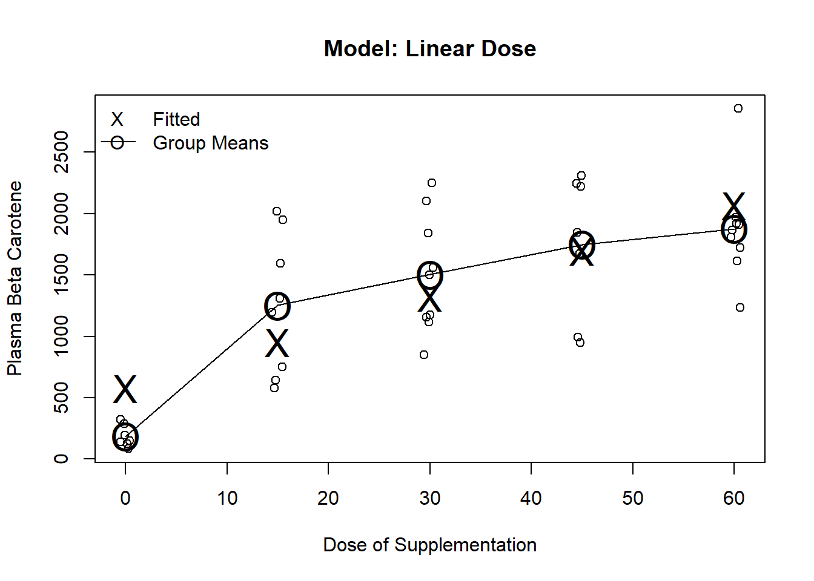
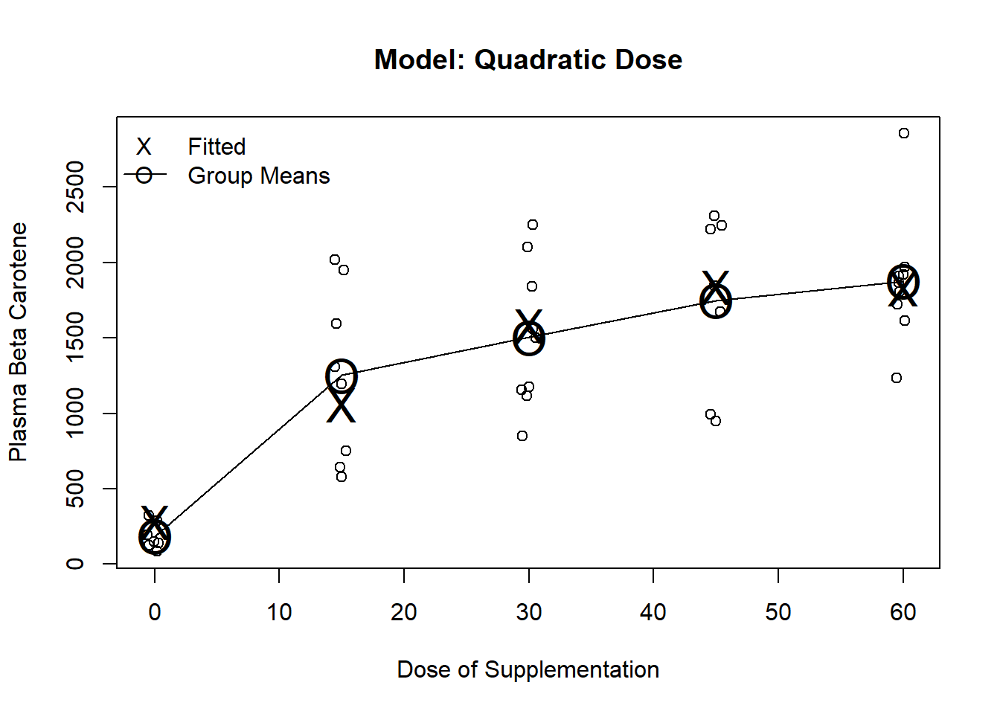
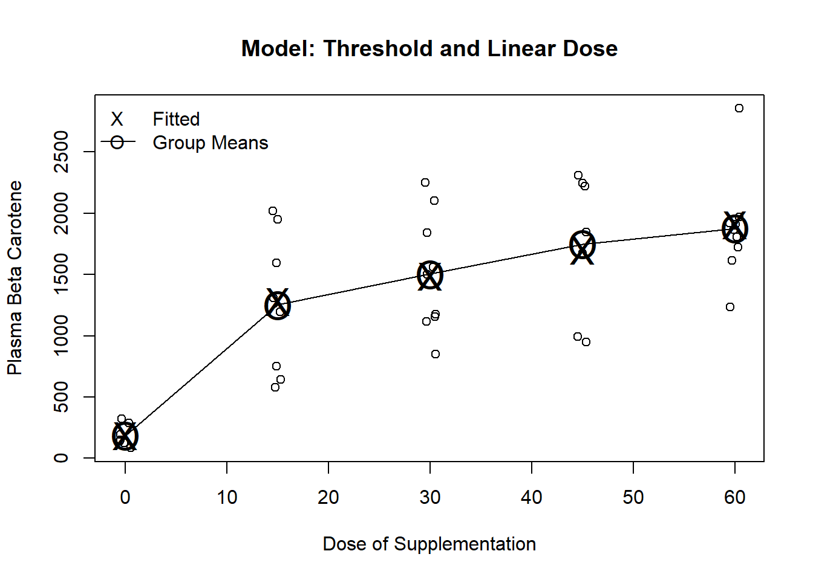

Code
library(rms)
library(ggplot2)
library(splines)
library(lspline)
library(lmtest)
library(sandwich)
library(car)
library(kableExtra)
library(plotrix)
tryCatch(source('pander_registry.R'), error = function(e) invisible(e))Lecture 12
October 7, 2024
library(rms)
library(ggplot2)
library(splines)
library(lspline)
library(lmtest)
library(sandwich)
library(car)
library(kableExtra)
library(plotrix)
tryCatch(source('pander_registry.R'), error = function(e) invisible(e))There are many different ways we can model predictors
Consider what alternative models will make scientific sense
What is the impact of letting the data drive the selection of a model
I am going to discuss in terms of a clinical trial where we have replicates at dose levels
Compare power of linear continuous models versus ANOVA as a function
of trend in means AND
standard errors withing groups
ANOVA (dummy variables)
Uses indicator variables for every dose (group) level
Again, I am thinking about “dose” in a general sense that could include covariates like age, cholesterol, blood pressure, etc.
Traditionally, dose would just be dose of some treatment
Fits group means exactly (saturated model)
One way ANOVA: One categorical predictor
Two way ANOVA: Two categorical predictors
Saturated models do not mix random error with systematic error
Systematic error: Error due to differences from sample means from predicted means
Random error: Error that cannot be explained after controlling for dose
ANOVA ignores the ordering of the groups, so it gains no power from trends
e.g. does not assume that the difference between dose=15 and dose=30 group is similar to the difference between the dose=30 and dose=45 groups
In fact, the same level of significance is gained no matter what permutation of dose groups is used
Linear continuous models
Borrows information across groups
If model is incorrect, mixes random and systematic error
Can gain power from ordering of groups in order to detect a trend
n <- 10
dose.levels <- c(0,20,40,60,80)
dose <- rep(dose.levels, n)
set.seed(37)
y1 <- 300 + 5*dose + rnorm(5*n, 0, 200)
y2 <- 300 + 200*(dose==20) + 100*(dose==40) - 100*(dose==60) + 0*(dose==80) + rnorm(5*n, 0, 200)
m1 <- lm(y1 ~ dose)
m2 <- lm(y1 ~ factor(dose))
#m3 <- lm(y2 ~ dose)
m4 <- lm(y2 ~ factor(dose))
p1 <- predict(m1, newdata=data.frame(dose=dose.levels), se.fit=TRUE)
p2 <- predict(m2, newdata=data.frame(dose=dose.levels), se.fit=TRUE)
#p3 <- predict(m3, newdata=data.frame(dose=dose.levels), se.fit=TRUE)
p4 <- predict(m4, newdata=data.frame(dose=dose.levels), se.fit=TRUE)par(mfrow=c(2,2))
plotCI(x=dose.levels, y=p1$fit, p1$se.fit, ylab="Response", xlab="Dose", ylim=c(0,1000), main="Linear: High power; ANOVA: High Power")
plotCI(x=dose.levels, y=p1$fit, 3*p1$se.fit, ylab="Response", xlab="Dose", ylim=c(0,1000), main="Linear: Mod power; ANOVA: Low Power")
plotCI(x=dose.levels[c(1,5,4,2,3)], y=p1$fit, p1$se.fit, ylab="Response", xlab="Dose", ylim=c(0,1000), main="Linear: No power; ANOVA: High Power")
plotCI(x=dose.levels[c(1,5,4,2,3)], y=p1$fit, 3*p1$se.fit, ylab="Response", xlab="Dose", ylim=c(0,1000), main="Linear: No power; ANOVA: Low Power")
Other options for modeling continuous predictors
Combinations of linear trends and indicator variables
Splines
Polynomials
etc.
The exact form used to model predictors should be based on scientific (first) and statistical (second) criteria
Scientific issues
The form used to model predictors must address the specific scientific question
Should be the next logical step in the process of investigating the overall goal
First, establish some sort of an association
Second, detect a first order trend
Third, detecting specific forms of non-linearities
Threshold effects?
U- or S-shaped trends?
Finally, more complex models
When the scientific question relates to prediction, it is imperative that the regression model accurately reflects the true relationship between predictors and the summary measure of response
When the scientific question relates to detection of associations, the importance of having the true model depends on the statistical role of the predictor
With the predictor of interest, the most important issues is to protect the validity of the statistical inference
With precision variables, it is not as crucial that the true relationship be modeled
With confounders, failure to accurately model the relationship between the confounder and the response may lead to residual confounding
As the goal of any analysis is to communicate findings to the greater scientific community, it is also important that modeling of predictors is easy to understand
This is an issue that matters most for your predictor of interest
We are generally not worried about making inference about precision variables or confounders
Statistical issues
The greatest statistical precision will be gained when the model reflects the true relationship between the predictor and the response
Accurate modeling of the relationship will avoid introducing systematic error in the estimates of the standard errors
Parsimony: Using the fewest parameters to model the relationship will allow greater precision
Precision is a trade-off between parsimony and increased accuracy from including more parameters
We should select the form of modeling the predictor before looking at the data
Data drive selection of transformations will tend to lead to inaccurate (anti-conservative) statistical inference
Overfitting of the data leads to spuriously low estimates of the within group variability
Thus standard errors estimates are too low
Type-I errors are inflated
Confidence interval are too narrow (inaccurate coverage probabilities)
Data-driven model selection will also lead to coefficient estimates that are biased away from the null (leading you to overstate your scientific effects)
Before doing large scale clinical trials, it is important to understand the pharmacokinetics of a drug
Phase II prevention trials often administer a drug in various doses to volunteers, and pertinent plasma levels are then measured at regular intervals
Of particular interest is how dose level affects the build up of drug in the plasma over time, as well as how the dose level might affect other blood chemistry
Forty-six (46) volunteers were randomly assigned to receive one of five doses of beta-carotene (0, 15, 30, 45, or 60 mg/day) for 9 months in a double blind fashion
The specific aim was to determine how different dose levels affected the serum beta-carotene levels after 9 months
Other measured variables available in this data set include subject age, sex, weight, body mass index, percent body fat, and serum cholesterol level at baseline
carot <- stata.get("data/carot.dta")
res1 <- aggregate(carot3 ~ dose, data = carot,
FUN = function(x) c(n = length(x), mean = mean(x), sd = sd(x),
min = min(x), q25 = quantile(x, 0.25),
median = median(x), q75 = quantile(x, 0.75),
max = max(x)))
data.frame(dose = res1$dose, res1$carot3, check.names = FALSE)| dose | n | mean | sd | min | q25.25% | median | q75.75% | max |
|---|---|---|---|---|---|---|---|---|
| 0 | 7 | 186.32 | 87.798 | 84.50 | 133.00 | 149.0 | 240.88 | 323.0 |
| 15 | 8 | 1253.58 | 570.467 | 576.75 | 722.69 | 1250.0 | 1682.44 | 2018.8 |
| 30 | 9 | 1504.61 | 479.026 | 849.33 | 1157.33 | 1498.5 | 1840.00 | 2248.5 |
| 45 | 7 | 1749.08 | 579.049 | 950.25 | 1333.00 | 1848.2 | 2234.33 | 2310.4 |
| 60 | 9 | 1877.63 | 429.880 | 1233.33 | 1724.67 | 1865.0 | 1917.67 | 2855.0 |
In this randomized trial, we can consider several potential response variables
Plasma level at the end of treatment
Change in plasma level over the treatment period
Either of the above adjusted for baseline plasma (ANCOVA model)
Accounting for baseline
Dose group \(i\), subject \(j\), time \(t\)
\(Y_{ijt} \sim (\mu_{it}, \sigma^2)\); \(\textrm{corr}(Y_{ij0}, Y_{ij9}) = \rho\) \[\begin{aligned} \overline{Y}_{i\cdot9} & \sim & \left(\mu_{i9}, \sigma^2/n \right) \\ \overline{Y}_{i\cdot9} - \overline{Y}_{i\cdot0} & \sim & \left(\mu_{i9} - \mu_{i0}, 2\sigma^2(1-\rho)/n \right) \\ \overline{Y}_{i\cdot9} - \rho \overline{Y}_{i\cdot0} & \sim & \left(\mu_{i9} - \rho \mu_{i0}, \sigma^2(1-\rho^2)/n \right)\end{aligned}\]
Compared variances of the above three equations
When are the variances equal, smaller, larger
Which is always smallest
By randomization, there will be equal means at baseline
Contrast across dose groups \[\begin{aligned} \overline{Y}_{T,\cdot9} - \overline{Y}_{P,\cdot9} & \sim & \left(\mu_{T,9} - \mu_{P,9}, 2\sigma^2/n \right) \\ \left(\overline{Y}_{T,\cdot9} - \overline{Y}_{T, \cdot0}\right) - \left(\overline{Y}_{P,\cdot9} - \overline{Y}_{P, \cdot0}\right) & \sim & \left(\mu_{T,9} - \mu_{P,9}, 4\sigma^2(1-\rho)/n \right) \\ \left(\overline{Y}_{T,\cdot9} - \rho \overline{Y}_{T,\cdot0}\right) - \left(\overline{Y}_{P,\cdot9} - \rho \overline{Y}_{P,\cdot0}\right) & \sim & \left(\mu_{T,9} - \mu_{P,9}, 2\sigma^2(1-\rho^2)/n \right)\end{aligned}\]
Simple linear regression
Regress \(Y\) on \(X\)
\(Y_i \sim \left(\mu_Y, \sigma^2_Y\right)\); \(X_i \sim \left(\mu_X, \sigma^2_X\right)\)
\(\textrm{corr}\left(Y_i, X_i \right) = \rho\)
Regression model: \(E[Y_i | X_i] = \beta_0 + \beta_1 X_i\)
\(\beta_0 = \mu_Y - \beta_1 \mu_x\)
\(\beta_1 = \rho \frac{\sigma_Y}{\sigma_X}\)
Analysis of Covariance
Dose group \(i\), subject \(j\), time \(t\)
\(Y_{ijt} \sim (\mu_{it}, \sigma^2)\); \(\textrm{corr}(Y_{ij0}, Y_{ij9}) = \rho\)
Regression model: \(E[Y_{ij9} | Y_{i_j0}] = \beta_0 + \beta_1 Y_{ij0}\)
In a randomized clinical trial, we will tend to have the greatest precision if we adjust for baseline as a predictor in a linear regression model
A wide variety of models may be considered for examining the relationship between dose and plasma levels
Dummy variables where we model each dose level independently, without borrowing information across groups (ANOVA)
Linear continuous predictors (transformed or untransformed)
Dichotomization (at any of several thresholds)
Polynomials, splines, other flexible methods
Combinations of the above
Even more complex models
I will compare possible models
Graphically: Show data and fitted values without adjustment for baseline
Numerically: Show regression estimates and tests after adjustment for baseline
Note that this is an academic exercise and not something you would do in practice to come up with the “best” model
Predicted values
After computing a regression command, Stata will provide predicted values for each case
Mathematically, this is just the intercept plus the regression parameters multiplied by the covariates for each case
Stata command: predict varname
Fits each group independently
Does not use the ordering of the dose groups when looking for an effect
A priori, we might expect this is not the most efficient method if the alternative hypothesis is true
We expect larger plasma levels with increasing dose
We will thus have less power to detect a first-order trend
carot$dose.factor <- factor(carot$dose)
m.factor <- lm(carot3 ~ dose.factor + carot0, data=carot)
coeftest(m.factor, vcov=sandwich)| Estimate | Std. Error | t value | Pr(>|t|) | |
|---|---|---|---|---|
| (Intercept) | -361.4516 | 154.46722 | -2.3400 | 0.02529265 |
| dose.factor15 | 1224.1896 | 196.89130 | 6.2176 | 0.00000045 |
| dose.factor30 | 1439.8373 | 143.63572 | 10.0242 | 0.00000000 |
| dose.factor45 | 1678.9839 | 154.10485 | 10.8951 | 0.00000000 |
| dose.factor60 | 1791.0090 | 141.00926 | 12.7014 | 0.00000000 |
| carot0 | 1.9028 | 0.49509 | 3.8433 | 0.00050617 |
plot(jitter(carot$dose, factor=.2), carot$carot3, ylab="Plasma Beta Carotene", xlab="Dose of Supplementation", main="Model: Dummy Variables (ANOVA)")
m1 <- lm(carot3~factor(dose), data=carot)
points(seq(0,60, by=15), predict(m1, newdata=data.frame(dose=seq(0,60, by=15))), pch="O", cex=2)
points(seq(0,60, by=15), predict(m1, newdata=data.frame(dose=seq(0,60, by=15))), pch="X", cex=2)
lines(seq(0,60, by=15), predict(m1, newdata=data.frame(dose=seq(0,60, by=15))))
legend("topleft", c("Fitted", "Group Means"), pch=c("X","O"), lty=c(NA,1), bty="n")Testing for the dose effect
We must use the testparm command (or test) because the model includes the baseline measurement
testparm is similar to test, but allows testing multiple parameters using wildcards
linearHypothesis(m.factor, c("dose.factor15",
"dose.factor30",
"dose.factor45",
"dose.factor60"),
vcov=sandwich(m.factor))| Res.Df | Df | F | Pr(>F) |
|---|---|---|---|
| 38 | |||
| 34 | 4 | 69.959 | 0 |
We would have had the same fitted values (and thus inference) if we had decided to drop a different dose group
carot$dose.new <- relevel(carot$dose.factor, ref="60")
m2.factor <- lm(carot3 ~ dose.new + carot0, data=carot)
coeftest(m2.factor, vcov=sandwich)| Estimate | Std. Error | t value | Pr(>|t|) | |
|---|---|---|---|---|
| (Intercept) | 1429.5573 | 163.01893 | 8.76927 | 3.0000e-10 |
| dose.new0 | -1791.0090 | 141.00926 | -12.70136 | 0.0000e+00 |
| dose.new15 | -566.8194 | 221.47493 | -2.55929 | 1.5108e-02 |
| dose.new30 | -351.1717 | 173.86127 | -2.01984 | 5.1337e-02 |
| dose.new45 | -112.0251 | 188.55038 | -0.59414 | 5.5635e-01 |
| carot0 | 1.9028 | 0.49509 | 3.84332 | 5.0617e-04 |
linearHypothesis(m2.factor, c("dose.new0",
"dose.new15",
"dose.new30",
"dose.new45"),
vcov=sandwich(m2.factor))| Res.Df | Df | F | Pr(>F) |
|---|---|---|---|
| 38 | |||
| 34 | 4 | 69.959 | 0 |
Note that the parameter estimates all will lead to the same fitted values
Overall F statistics, R-squared, Root MSE all the same
Partial t-tests tend to differ as we are making comparisons to different reference groups
Could also fit the same model with no intercept
Would then have to include all five dose groups
We can get Stata to include fit all five dose groups and no intercept using the noconstant option
In R, fit a model without an intercept by adding a \(-1\) in the model equation (e.g. \(y \sim -1 + x\))
Not including the intercept changes the overall F statistic and the R-squared measures
m3.factor <- lm(carot3 ~ -1 + dose.factor + carot0, data=carot)
coeftest(m3.factor, vcov=sandwich)| Estimate | Std. Error | t value | Pr(>|t|) | |
|---|---|---|---|---|
| dose.factor0 | -361.4516 | 154.46722 | -2.3400 | 2.5293e-02 |
| dose.factor15 | 862.7379 | 223.06284 | 3.8677 | 4.7235e-04 |
| dose.factor30 | 1078.3857 | 165.01387 | 6.5351 | 1.7530e-07 |
| dose.factor45 | 1317.5322 | 205.85752 | 6.4002 | 2.6150e-07 |
| dose.factor60 | 1429.5573 | 163.01893 | 8.7693 | 3.0000e-10 |
| carot0 | 1.9028 | 0.49509 | 3.8433 | 5.0617e-04 |
Correspondence of the no-intercept model compared to previous models
Some textbooks refer to this as a “cell means” coding system
If we didn’t have baseline beta carotene in the model, the dose parameters would correspond directly to the means in each dose group
With baseline beta carotene in the model, the dose parameters are the means when carot0 is 0
In terms of model fit, the model is the same as before
Fitted values will be the same
Test of dose effect will need to test equality of all five dose covariates
This is not a test that these 5 parameters are 0
\(H_0: dose0 = dose15 = dose30 = dose45 = dose60\)
\(H_1:\) at least one of the above is not equal
linearHypothesis(m3.factor, c("dose.factor0=dose.factor15",
"dose.factor0=dose.factor30",
"dose.factor0=dose.factor45",
"dose.factor0=dose.factor60"),
vcov=sandwich(m3.factor))| Res.Df | Df | F | Pr(>F) |
|---|---|---|---|
| 38 | |||
| 34 | 4 | 69.959 | 0 |
Dichotomize into dose 0 versus dose \(>\) 0
Will be an accurate model if all (or virtually all) of the effect is attained at the lowest dose level
Often used when little is know about a treatment, or when dose is difficult to quantify
e.g. Smoking
We are relatively certain of a smoking effect, so our major scientific interest is likely related to the dose-response relationship above the lowest dose
carot$trt <- (carot$dose>0)+0
m.trt <- lm(carot3 ~ trt + carot0, data=carot)
coeftest(m.trt, vcov=sandwich(m.trt))| Estimate | Std. Error | t value | Pr(>|t|) | |
|---|---|---|---|---|
| (Intercept) | -406.6816 | 207.08860 | -1.9638 | 0.0570999 |
| trt | 1544.2205 | 115.44469 | 13.3763 | 0.0000000 |
| carot0 | 2.0599 | 0.68203 | 3.0203 | 0.0045596 |
m2 <- lm(carot3 ~ dose>0, data=carot)
plot(jitter(carot$dose, factor=.2), carot$carot3, ylab="Plasma Beta Carotene", xlab="Dose of Supplementation", main="Model: Dichotomous Dose")
lines(seq(0,60, by=15), predict(m1, newdata=data.frame(dose=seq(0,60, by=15))), pch="O", cex=2)
points(seq(0,60, by=15), predict(m1, newdata=data.frame(dose=seq(0,60, by=15))), pch="O", cex=2)
points(seq(0,60, by=15), predict(m2, newdata=data.frame(dose=seq(0,60, by=15))), pch="X", cex=2)
legend("topleft", c("Fitted", "Group Means"), pch=c("X","O"), lty=c(NA,1), bty="n")
Estimates the best fitting straight line to response
Often used when little is know about the treatment and a general trend is expected
m.cont <- lm(carot3 ~ dose + carot0, data=carot)
coeftest(m.cont, vcov=sandwich(m.cont))| Estimate | Std. Error | t value | Pr(>|t|) | |
|---|---|---|---|---|
| (Intercept) | 245.0003 | 214.29566 | 1.1433 | 2.6027e-01 |
| dose | 25.4628 | 3.49367 | 7.2883 | 1.1700e-08 |
| carot0 | 1.3341 | 0.63189 | 2.1113 | 4.1565e-02 |
test command for dose or use the output directly as we are only testing one parameterm3 <- lm(carot3 ~ dose, data=carot)
plot(jitter(carot$dose, factor=.2), carot$carot3, ylab="Plasma Beta Carotene", xlab="Dose of Supplementation", main="Model: Linear Dose")
lines(seq(0,60, by=15), predict(m1, newdata=data.frame(dose=seq(0,60, by=15))), pch="O", cex=2)
points(seq(0,60, by=15), predict(m1, newdata=data.frame(dose=seq(0,60, by=15))), pch="O", cex=2)
points(seq(0,60, by=15), predict(m3, newdata=data.frame(dose=seq(0,60, by=15))), pch="X", cex=2)
legend("topleft", c("Fitted", "Group Means"), pch=c("X","O"), lty=c(NA,1), bty="n")
Fit terms involving dose, dose squared
Often used to fit U-shaped trends
In general, a quadratic is a pretty strong assumption in that it assumes constant curvature over dose
m.poly <- lm(carot3 ~ poly(dose,2) + carot0, data=carot)
coeftest(m.poly, vcov=sandwich(m.poly))| Estimate | Std. Error | t value | Pr(>|t|) | |
|---|---|---|---|---|
| (Intercept) | 935.2470 | 157.31460 | 5.9451 | 8.2290e-07 |
| poly(dose, 2)1 | 3652.1148 | 377.96287 | 9.6626 | 0.0000e+00 |
| poly(dose, 2)2 | -1716.6346 | 351.59782 | -4.8824 | 2.1511e-05 |
| carot0 | 1.7281 | 0.53494 | 3.2304 | 2.6414e-03 |
m4 <- lm(carot3 ~ poly(dose, 2), data=carot)
plot(jitter(carot$dose, factor=.2), carot$carot3, ylab="Plasma Beta Carotene", xlab="Dose of Supplementation", main="Model: Quadratic Dose")
lines(seq(0,60, by=15), predict(m1, newdata=data.frame(dose=seq(0,60, by=15))), pch="O", cex=2)
points(seq(0,60, by=15), predict(m1, newdata=data.frame(dose=seq(0,60, by=15))), pch="O", cex=2)
points(seq(0,60, by=15), predict(m4, newdata=data.frame(dose=seq(0,60, by=15))), pch="X", cex=2)
legend("topleft", c("Fitted", "Group Means"), pch=c("X","O"), lty=c(NA,1), bty="n")
The partial t-test for dosesqr can be interpreted as a test for linear dose response
To test the treatment effect, we need to test the two dose covariates
linearHypothesis(m.poly, c("poly(dose, 2)1",
"poly(dose, 2)2"),
vcov=sandwich(m.poly))| Res.Df | Df | F | Pr(>F) |
|---|---|---|---|
| 38 | |||
| 36 | 2 | 93.951 | 0 |
With 5 discrete dose levels, a 4th degree polynomial will fit the means exactly
Thus, the model will have the same fit as the ANOVA model using dummy variables for each levels of dose
Higher order polynomials are borrowing less information across dose groups
Highest order polynomial borrows no information across dose groups
. gen dosecub = dose^3
. gen dosequad = dose^4
. regress carot3 dose dosesqr dosecub dosequad carot0, robust
Linear regression Number of obs = 40
F( 5, 34) = 47.68
Prob > F = 0.0000
R-squared = 0.7184
Root MSE = 417.46
------------------------------------------------------------------------------
| Robust
carot3 | Coef. Std. Err. t P>|t| [95% Conf. Interval]
-------------+----------------------------------------------------------------
dose | 157.876 61.94333 2.55 0.015 31.99197 283.7599
dosesqr | -6.943752 5.066692 -1.37 0.180 -17.24051 3.353004
dosecub | .1385695 .1313523 1.05 0.299 -.1283706 .4055096
dosequad | -.0009734 .0010718 -0.91 0.370 -.0031515 .0012047
carot0 | 1.902792 .5370015 3.54 0.001 .8114738 2.99411
_cons | -361.4516 167.5432 -2.16 0.038 -701.9404 -20.96284
------------------------------------------------------------------------------
. xi: regress carot3 i.dose carot0, robust
i.dose _Idose_0-60 (naturally coded; _Idose_0 omitted)
Linear regression Number of obs = 40
F( 5, 34) = 47.68
Prob > F = 0.0000
R-squared = 0.7184
Root MSE = 417.46
------------------------------------------------------------------------------
| Robust
carot3 | Coef. Std. Err. t P>|t| [95% Conf. Interval]
-------------+----------------------------------------------------------------
_Idose_15 | 1224.19 213.5586 5.73 0.000 790.1863 1658.193
_Idose_30 | 1439.837 155.7948 9.24 0.000 1123.224 1756.45
_Idose_45 | 1678.984 167.1502 10.04 0.000 1339.294 2018.674
_Idose_60 | 1791.009 152.946 11.71 0.000 1480.185 2101.833
carot0 | 1.902792 .5370015 3.54 0.001 .8114738 2.99411
_cons | -361.4516 167.5432 -2.16 0.038 -701.9404 -20.96284
------------------------------------------------------------------------------Threshold at 0 and linear dose
To fit, use a dummy variable for dose0 plus dose (continuous)
Fits dose 0 by its group mean
Fits dose \(>\) 0 by a line (an intercept and slope)
Allows us to address two scientific questions
Is there any effect of dose? (test both slopes)
Is there any additional benefit beyond the lowest dose? (test linear term’s slope)
. regress carot3 trt dose carot0, robust
Linear regression Number of obs = 40
F( 3, 36) = 81.26
Prob > F = 0.0000
R-squared = 0.7170
Root MSE = 406.69
------------------------------------------------------------------------------
| Robust
carot3 | Coef. Std. Err. t P>|t| [95% Conf. Interval]
-------------+----------------------------------------------------------------
trt | 1050.836 223.418 4.70 0.000 597.7237 1503.949
dose | 12.81144 4.794314 2.67 0.011 3.088122 22.53476
carot0 | 1.904584 .5164903 3.69 0.001 .8570932 2.952075
_cons | -361.9675 161.4254 -2.24 0.031 -689.3534 -34.58168
------------------------------------------------------------------------------m5 <- lm(carot3 ~ (dose >0) + dose, data=carot)
plot(jitter(carot$dose, factor=.2), carot$carot3, ylab="Plasma Beta Carotene", xlab="Dose of Supplementation", main="Model: Threshold and Linear Dose")
lines(seq(0,60, by=15), predict(m1, newdata=data.frame(dose=seq(0,60, by=15))), pch="O", cex=2)
points(seq(0,60, by=15), predict(m1, newdata=data.frame(dose=seq(0,60, by=15))), pch="O", cex=2)
points(seq(0,60, by=15), predict(m5, newdata=data.frame(dose=seq(0,60, by=15))), pch="X", cex=2)
legend("topleft", c("Fitted", "Group Means"), pch=c("X","O"), lty=c(NA,1), bty="n")
Testing the effect of treatment
Two variables model dose, so we need to test both
If response increases from dose 0 to lowest dose OR
… response increases as dose increase, THEN
… we will declare an effect of treatment
The partial t-test for the trt term can be used to test for linear dose response
The partial t-test for the dose term can be interpreted as a test for any added effect above the lowest dose
It is significantly different from 0 (\(p = 0.011\))
There is a multiple comparison issue here, but many people are comfortable doing this ‘step down’ test after they have already tested from any treatment effect
. test trt dose
( 1) trt = 0
( 2) dose = 0
F( 2, 36) = 121.88
Prob > F = 0.0000Suppose we look at a scatterplot before deciding which model we fit and choose a model that can fit the data well
If the data looks like a straight line, choose the model linear in dose
If the data looks like a U, choose a quadratic
If the data is a complicated pattern of differences among groups, we might choose dummy variables or splines
etc.
This approach would tend to mimic the behavior of fitting several different models and choosing the model with the lowest \(p\)-value
Using the 46 subjects in this dataset, I can randomly permute the dose they received
Effectively, randomize subjects to a different dose
But, keep their 9-month and baseline beta carotene levels the same (not permuted)
Next, fit each of the five models (linear, quadratic, ANOVA, dichotomized, and dichotomized plus linear)
Repeat the process 1000 times (representing 1000 studies)
set.seed(80)
reps <- 1000
n <- length(carot$carot3)
p.vals <- matrix(NA, nrow=reps, ncol=5)
y <- carot$carot3
y0 <- carot$carot0
m.restrict <- lm(y ~ y0)
for(i in 1:reps) {
perm <- sample(1:n)
#Permute the dose, but not the outcome and baseline
d <- carot$dose[perm]
m.anova <- lm(y ~ y0 + factor(d))
m.linear <- lm(y ~ y0 + d)
m.quad <- lm(y ~ y0 + poly(d,2))
m.dichot <- lm(y ~ y0 + (d>0))
m.dilin <- lm(y ~ y0 + d + (d>0))
p.vals[i,1:5] <- c(anova(m.anova)[2,"Pr(>F)"], anova(m.linear)[2,"Pr(>F)"], anova(m.quad)[2,"Pr(>F)"], anova(m.dichot)[2,"Pr(>F)"], anova(m.restrict, m.dilin)[2,"Pr(>F)"])
}
# Proportion significant by model
apply(p.vals<0.05, 2, mean)
1.96*sqrt(.05*(1-.05)/reps)
table(apply(p.vals<.05,1, sum)) / reps
# Propotion where at least 1 was significant
p.hat <- sum(apply(p.vals<.05,1, sum) >= 1) / reps
p.hat
p.hat + c(-1.96,1.96)*sqrt(p.hat*(1-p.hat)/reps)Individual Model Results
| Model | Emp. Type-I error |
| ANOVA | 0.049 |
| Linear | 0.046 |
| Quadratic | 0.046 |
| Dichotomized | 0.050 |
| Dichot + linear | 0.041 |
Multiple comparison issues
With 5 hypothesis tests at a nominal 0.05 level, experiment-wise error rate is at most \(0.25\) (\(0.05 \times 5\))
Worst-case assumes that all tests are mutually exclusive
e.g. If the linear dose-response model is significant, no other model is more likely to be significant
In fact, the tests will be correlated
How many of the 1000 simulated trials had at least on model with a \(p\)-value \(< 0.05\)?
From the simulation, I found this to be \(122\) or \(12.2\%\)
Note that there is error in this estimate (due to the simulation randomness)
General statistical issues
The true type 1 error rate for such data driven analyses will depend on several factors
The number of tests performed
The models considered
The distribution of the data
When you have multiple models you are considering, the conclusions are less strong
The p-values (or other metrics) can still be useful in ordering the associations
Among all of the models considered, it appears as if SNP X is the most strongly associated with CVD
In frequentist reasoning, we try to ensure that our error rate is held at some level \(\alpha\)
When only considering one decision, this is relatively easy
When making multiple decisions, we must consider the experiment-wise error rate
In the worst case scenario, an error rate of \(\alpha\) on each decision could lead to an experiment-wise error rate that is as high as \(k \times \alpha\)
If all error were independent of each other, then the experiment-wise error rate is
Experiment-wise error rates (\(\alpha = 0.05\) at each decision)
| Number of | Worst Case | Independent |
| Comparisons | Scenario | Errors |
| 1 | 0.0500 | 0.0500 |
| 2 | 0.1000 | 0.0975 |
| 3 | 0.1500 | 0.1426 |
| 5 | 0.2500 | 0.2262 |
| 10 | 0.5000 | 0.4013 |
| 20 | 1.0000 | 0.6415 |
| 50 | 1.0000 | 0.9231 |
When making multiple comparison which all tend address the same scientific question, we may adjust our level of significance to protect the experiment-wise error rate
Bonferroni Correction
Assumes the worst case scenario
When making \(k\) comparisons, either
Tests individual \(p\)-values against \(\frac{\alpha}{k}\)
Multiply \(p\)-values by \(k\) and compare to \(\alpha\) (keeping the \(p\)-values \(< 1\))
Bonferroni is easy and it can be applied in all settings
Many other varieties of adjusting after performing multiple comparisons
Tukey, Scheffe, etc.
None are great
Did they really adjust for all of the comparisons they made? Probably not.
My strong preference is to avoid multiple comparisons in the first place
If there was some model fitting involved to get to the final model, acknowledge that fact in the paper
Understand the science
Avoid data-driven approaches when you care about correct statistical inference (CIs and p-values)